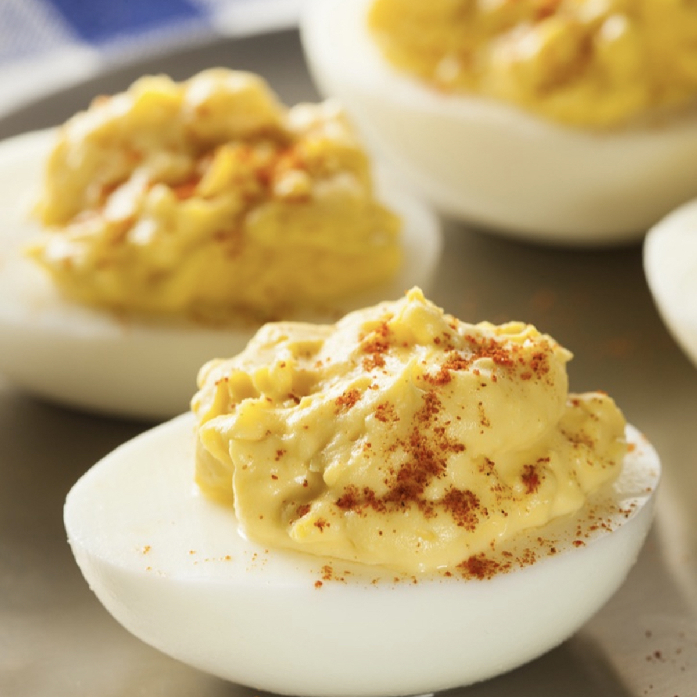

Deviled Eggs

Description
Hard boiled eggs are stuffed with a creamy blend of mayonnaise and spices.
Ingredients
- 6 hard boiled eggs
- 2 tablespoons mayonnaise
- 1 teaspoon rice wine vinegar
- 1 teaspoon dijon mustard
- 1/8 teaspoon garlic powder
- salt to taste
- 1/2 teaspoon fresh dill (optional)
- 1 pinch paprika
Steps
- Slice eggs in half and scoop egg yolks into a bowl. Set egg whites aside.
- Mash together egg yolk, mayonnaise, vinegar, dijon mustard, garlic powder, salt, and dill (optional). Mix well.
- Stuff egg yolk mixture into egg whites. Sprinkle with paprika. Refrigerate until serving.